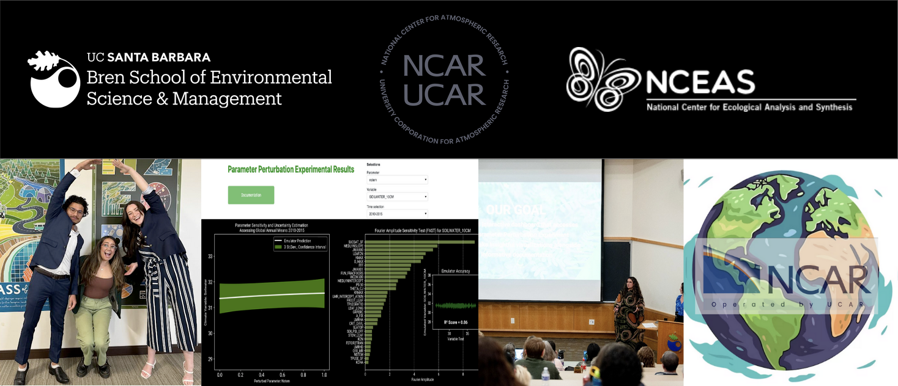
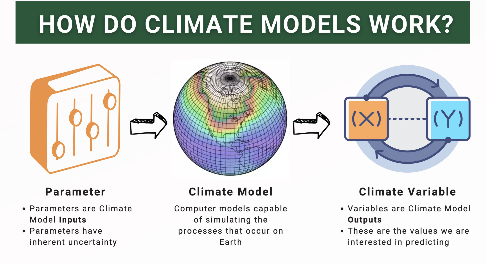
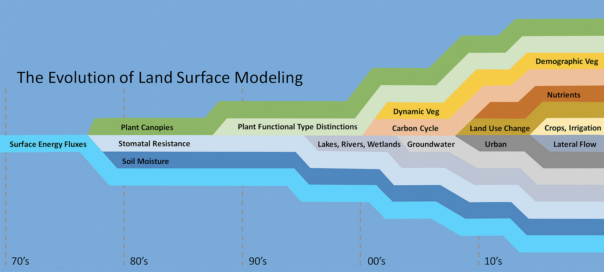
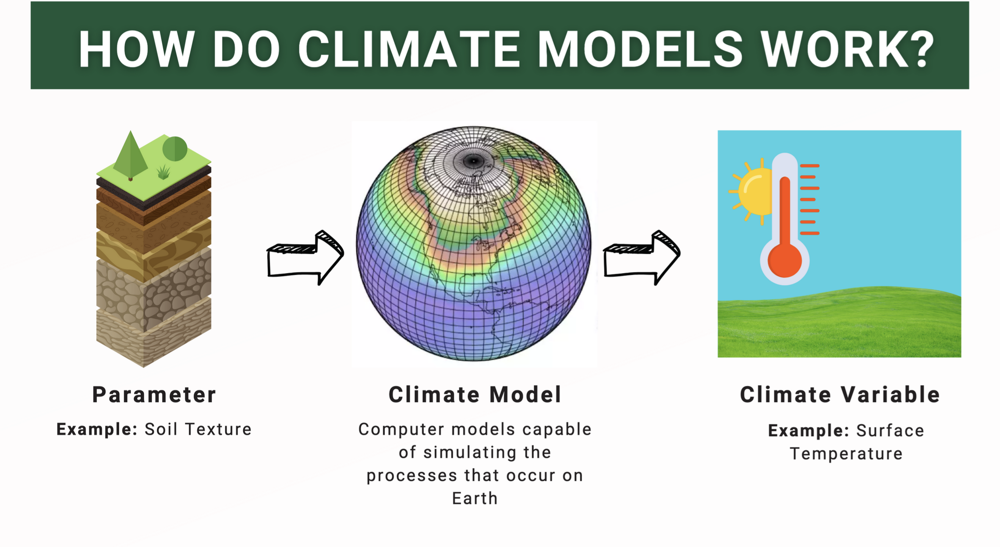
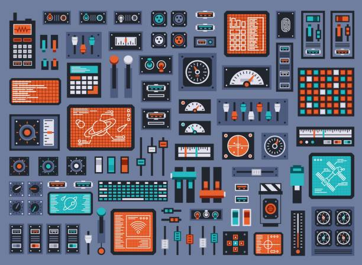
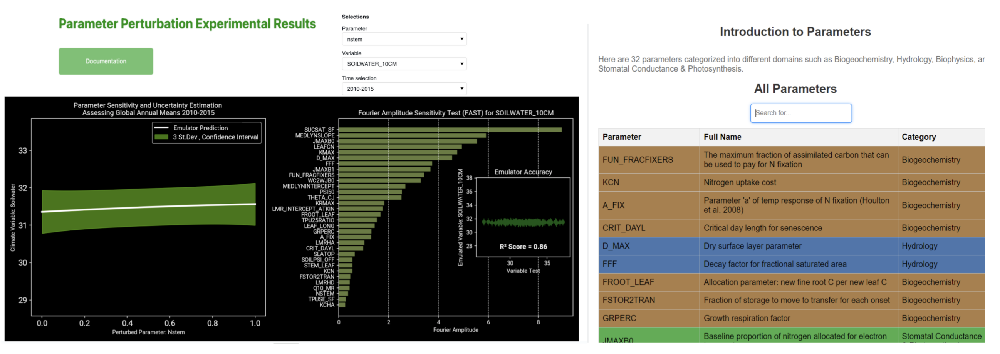
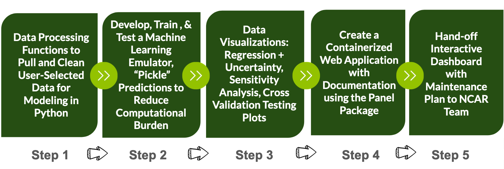
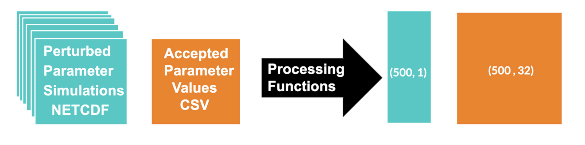
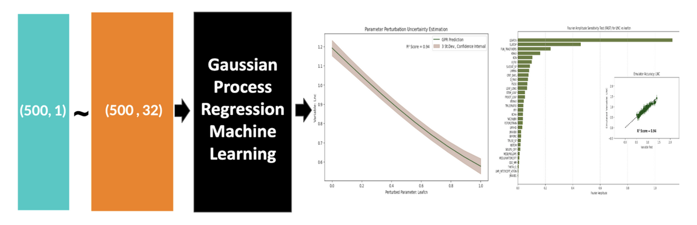
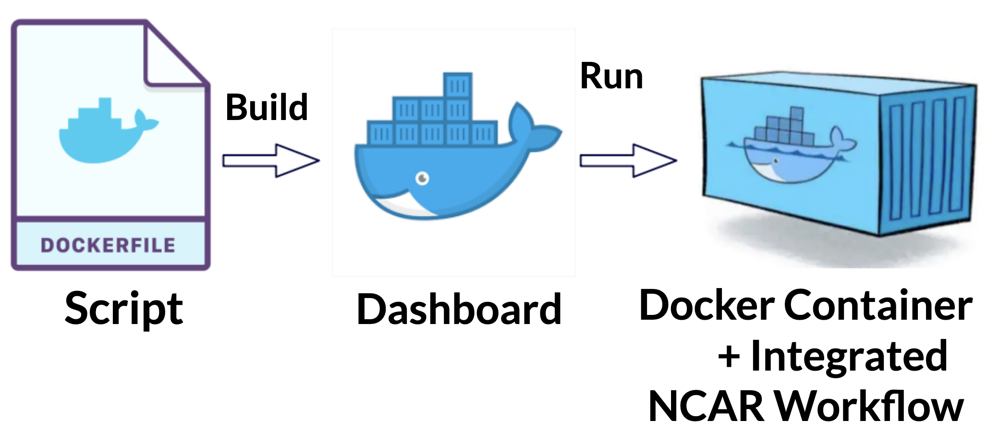

 Figure 1: The Gaia Future Team. Affiliations: The Bren School of Environmental Science & Management, UCSB; National Center for Atmospheric Research Climate & Global Dynamics Lab (“NCAR CGD”); National Center for Ecological Analysis and Synthesis (“NCEAS”).
** Note: For the less scientifically inclined, this document may contain some unfamiliar terms. I am providing a glossary to assist, these words will be underlined throughout the text with pop-up definitions. **
Understanding Climate Models

Figure 2: Defining what a climate model is and its components: input parameter and climate variable output.
Climate models are one of the most frequently utilized tools in climate science. In the most simple terms, they employ complex mathematics to simulate different scenarios on Earth (NOAA, 2014). They provide predictive insights into what the future may hold and are a powerful tool used to understand and mitigate potential climate hazards.

Figure 3: Timeline of land surface categories introduction into climate modeling system (Fisher, Koven, 2020).
There are several components of Earth’s systems to consider when modeling. On the right, we can see the rapid evolution of land surface modeling since the early 70s (Fisher, Koven, 2020). Over the last decade more than a handful of categories entered the world of climate modeling. For each of these model categories, there are a handful of input parameters (e.g. soil texture) and predicted climate variable outputs (e.g. surface temperature).

Figure 4: Utilizing the example of soil texture, a parameter with a wide range of varieties available on Earth (e.g. sand vs waterlogged soil), to explain how a predicted climate variable such as surface temperature will vary significantly depending on the input parameter value.
Due to the high variability in Earth’s biomes, there is inherent uncertainty when modeling climate predictions (Navarro, 2024). To more accurately calibrate climate models and optimize their predictive accuracy, the values assigned to input parameters require evaluation and assessment. In order to do so, climate scientists must overcome the difficulties of interpreting the large volumes of convoluted predictions.
About NCAR Climate & Global Dynamics Lab
Climate Modeling Experiment: Parameter Perturbation Experiments (“PPE”)
Our team’s client, NCAR CGD is an Earth system science research center sponsored by the National Science Foundation. Their research aims to increase our understanding of climate variability and climate change. Towards the outset of the MEDS program, myself and a colleague met with a member of the CGD team to discuss a recent experiment their team had conducted, the Parameter Perturbation Experiment (“PPE”). Their experiment generated a total of 10 terabytes of data. It utilized the Community Land Model version 5 (“CLM5”), the land component of the Community Earth System Model version 2 (CESM2), and consisted of two methods. Our project focused on the Latin Hypercube (“LHC”) approach.

Latin Hypercube (LHC)
The Latin Hypercube experiment attains in reflecting the natural chaos of the world by allowing for dynamic changes throughout all input parameters for each simulation. No two parameters contain the same input value (Eidhammer, et. al., 2024). However, they all fall within a standardized range of 0 and 1 and are an estimation of accepted values found in nature. In reality, these parameters are ever-changing, making the LHC approach a closer representation to Earth’s systems. Be that as it may, it is just as difficult to interpret.
The Issues
The raw data and metadata documentation was not easily accessible.
Required additional wrangling and visualizations in order to interpret simulation predictions.
Lacked prediction uncertainty measurements, thus inhibiting model calibration.
Our Goal
Our mission was to create a web tool that invites discovery, discussion, and innovation amongst climate scientists utilizing the PPE LHC data. Our team sought to deliver:
Descriptive metadata describing the model components and their associated Earth system category.
Adaptive machine learning tools and visualization to display a 1:1 input parameter-climate variable relationship with 3 st. dev. of associated uncertainty.
Sensitivity visualization capable of ranking each input parameters contribution to the climate variable prediction, alongside a cross validation accuracy plot.
Organized and optimized internal data archival system that grows with new user queries.
A containerized web tool compatible with continuous integration.

Figure 6: This is our web tool. On the left is an overview of the landing page with a prediction. The right displays the metadata associated with the categorized input parameters.
Our Approach
Create a robust file processing system: specifications include time range, parameter, and climate variable.
Develop an flexible machine learning emulator that can capture the complexity in the data and individually isolate a 1-to-1 parameter-climate variable relationship with embedded uncertainty and accuracy testing.
Provide informative visualizations packaged in a user-friendly web application that requires minimal upkeep.
Figure 7: Reproducible workflow for NCAR CDG’s PPE data visualization and interpretation.
Tangible Solutions
Optimized Computing & Data Archival Tactics

Figure 8: Data wrangling workflow, from raw PPE data into tidy data for machine learning analysis. Blue represents the user selected climate variable that was simulated and orange is the collection of accepted parameter values.
We wanted to make the information relevant to a user’s interest, so options to select a timeline, input parameter, and climate variable were essential. For the query of interest, appropriate weights to the temporal dimension were applied, so that time reflected calendar months accurately. Additionally, spatial weights for grid cells were assigned according to respective land area. Once wrangled, these data sets were ready for machine learning analysis.
To reduce the computational burden and carbon consumption associated with our web tool, we employed the unique package, pickle. Similar to the traditional idea of preserving, ‘pickling’ is a systematic approach to storing data long-term in a low storage way. The phrase is coined by the package provider. ‘Pickling’ processes high volumes of data files using serialization for fast storage and loading (pickle, 2024). In contrast, ‘unpickling’ undoes this process for quick predictions and visualizations. Whenever applicable, our application stores and retrieves data in lieu of repeating tabulations. As the web tool is more heavily used, the data archive will increase and the overall computational workload will be reduced overtime.
Machine Learning Emulator & Data Visualizations
*Bare with me, we are entering the densest sections, they contain pertinent details about our model components.*
Gaussian Process Regression + Uncertainty

Figure 9: ‘Black box’ machine learning workflow displaying the preliminary data visualization outputs.
The objective when creating our tool was to provide climate scientists visual insights into how interesting certain parameter-climate variable relationships are over time with a defined level of confidence. To interpret the complex PPE data, a machine learning tool with flexible capabilities had to be built to provide insights into relationships and predictive uncertainty. The specific ML tool employed in this case was Gaussian Process Regression (“GPR”).
In layman’s terms, GPR can isolate individual parameters and determine their relationship with a predicted climate variable and the associated uncertainty (Görtler, et al., 2019). It is easiest to consider the GPR emulator as a ‘black box’. The tool itself simplifies the heavy lifting of the scientist by computing a surplus of predictions for a scenario without a defined statistical equation (Rasmussen, Williams, 2006). It emulates the climate scenario as described by the PPE data. The tool applies Bayesian statistics to average the predictions and provide 3 standard deviations of uncertainty. This can be seen above in the regression plot on the left side.
FAST: Fourier Amplitude Sensitivity Transformation + Cross Validation Accuracy Testing
This following feature will allow climate scientists the ability to identify major contributors to specific climate events. Leveraging our machine learning tool, a sensitivity analysis feature for predictions was developed using a method called FAST, Fourier Amplitude Sensitivity Transformation. In the simplest terms, FAST can isolate each parameter and rank them according to their relative influence on a predicted climate variable. Mathematically, FAST conducts a sensitivity analysis by decomposing the variance of the involved components and assigning it accordingly to parameters for a predicted scenario (Fang, Gertner, et. al., 2003). To assess the accuracy of the GPR and FAST predictions, a cross validation test was conducted for each simulation, plotted, and paired with the associated R² value. This is the inset plot seen above on the right.
Containerized Web Application with Continuous Integration

Figure 10: Workflow to describe the back-end workflow of the dashboard operating system.
Our team prepared a maintenance plan for our web tool hand-off. All essential software is embedded within our product. We used the Docker approach to do so and containerize our web app. This prevents any package updates made in the future from breaking our code. The deliverable is currently in the hands of the NCAR Software Team and is awaiting publication. Its future application will lead to climate model calibrations that will contribute upstream to the Coupled Model Intercomparison Project (“CMIP”) provided by the Intergovernmental Panel on Climate Change (“IPCC”).
Acknowledgements
The author of this blog post would like to say a special thank the cross-country team that supported our project:
National Center for Atmospheric Research: Dr. Daniel Kennedy, Project Scientist; Nick Cote, Software Engineer;
Bren School of Environmental Science & Management: Dr. Carmen Galaz García, Assistant Teaching Professor; Dr. Satie Airamé, Assistant Dean; Emily Case, Capstone Project Coordinator;
Columbia University: Dr. Linnia Hawkins, Associate Research Scientist
Glossary
10 terabytes of data: A large amount of digital information equivalent to approximately 10,000 gigabytes. Often used to store or analyze extensive datasets.
Accuracy: A measure of how close a predicted value is to the true value, often expressed as a percentage.
Bayesian statistics: A statistical approach that uses probability distributions to represent uncertainty in estimates and incorporates prior knowledge.
Black box: A system or model where the internal workings are not visible or understood, but inputs and outputs are observed.
Climate variable: A measurable factor related to climate, such as temperature, precipitation, or wind speed, often used as a predicted output in models.
Community Earth System Model version 2 (CESM2): A comprehensive climate model used for simulating Earth’s climate system and its components.
Containerized web tool: A web-based application deployed within a container, which ensures consistency and scalability across computing environments.
Continuous integration: A software development practice where code changes are automatically tested and integrated into a shared repository to ensure stability.
Coupled Model Intercomparison Project (“CMIP”): A collaborative framework designed to improve climate models and compare their predictions on a global scale.
Cross Validation Test: A statistical method used to evaluate a model’s predictive performance by partitioning data into training and testing subsets.
Defined level of confidence: A quantified level of certainty, often expressed as a percentage, indicating the likelihood that a result is accurate.
Fourier Amplitude Sensitivity Transformation (“FAST”): A technique used to assess the sensitivity of a model’s output to its input parameters.
Gaussian Process Regression (GPR): A non-parametric, probabilistic model used in machine learning to predict outputs and quantify uncertainty.
Gridcell; A single unit or cell within a spatial grid used in climate modeling, representing a defined area of Earth’s surface.
Inset plot: A smaller plot embedded within a larger plot to provide additional detail or context.
Intergovernmental Panel on Climate Change (“IPCC”): An international organization that assesses scientific knowledge on climate change to guide policy decisions.
Layman’s terms: Simple, non-technical language used to explain complex concepts.
Machine learning emulator: A computational model that mimics the behavior of a more complex system to save time and resources.
Metadata: Information that describes other data, such as its source, format, or context, to improve usability and understanding.
Parameter: A variable within a model or equation that influences its output.
Predictive Uncertainty: The range of possible values for a prediction, reflecting the model’s uncertainty.
Query: A request for specific information from a database or dataset.
R² value: A statistical measure of how well a model’s predictions match observed data, ranging from 0 (no fit) to 1 (perfect fit).
Raw data: Unprocessed data collected directly from sources, often requiring cleaning and formatting.
Regression plot: A graph that visualizes the relationship between independent and dependent variables, often used in statistical modeling.
Sensitivity analysis: A technique used to determine how different input variables affect a model’s output.
St. dev. | standard deviation: A measure of data spread that quantifies the variation around the mean.
Statistical equation: A mathematical formula that represents relationships between variables in a dataset.
Spatial weight: A factor used in spatial analysis to account for the influence of one area on another.
Temporal dimension: The time-based aspect of data or models, often used to track changes over time.
Variance: A statistical measure that describes the spread of data points around the mean.
Uncertainty measurements: Quantitative estimates of the doubt associated with a model’s predictions. Wrangling The process of cleaning, transforming, and organizing raw data for analysis.
References
Agor. “Set of Control Panel Elements for Spacecraft, Technical Knobs.” Shutterstock, 2012,https://www.shutterstock.com/image-vector/set-control-panel-elements-spacecraft-technical-1537154573. Accessed 03 Dec. 2024.
Dagon, Katie, and Daniel Kennedy. Parameter Perturbation Experiment (PPE). National Center for Atmospheric Research, 2023,https://www.cgd.ucar.edu/events/seminar/2023/katie-dagon-and-daniel-kennedy-132940. Accessed 03 Mar. 2024.
Eidhammer, Trude & Gettelman, Andrew & Thayer-Calder, Katherine & Watson-Parris, Duncan & Elsaesser, Gregory & Morrison, Hugh & van Lier-Walqui, Marcus & Song, Ci & Mccoy, Daniel. (2024). An extensible perturbed parameter ensemble for the Community Atmosphere Model version 6. Geoscientific Model Development. 17. 7835-7853. 10.5194/gmd-17-7835-2024. Accessed 03 Dec. 2024.
Fang, S., Gertner, G.Z., Shinkareva, S. et al. Improved generalized Fourier amplitude sensitivity test (FAST) for model assessment. Statistics and Computing 13, 221–226 (2003). https://doi.org/10.1023/A:1024266632666
Görtler, et al., “A Visual Exploration of Gaussian Processes”, Distill (2019), https://distill.pub/2019/visual-exploration-gaussian-processes/ . Accessed 03 Dec. 2024.
Intergovernmental Panel on Climate Change. About the IPCC. IPCC,https://www.ipcc.ch/about/. Accessed 3 March 2024.
Lawrence, David M., et al. “The Community Land Model Version 5: Description of New Features, Benchmarking, and Impact of Forcing Uncertainty.” Journal of Advances in Modeling Earth Systems, vol. 11, no. 12, 2019, pp. 4245–4287, https://doi.org/10.1029/2018MS001583. Accessed 30 Dec. 2024.
National Center for Atmospheric Research, Climate and Global Dynamics Division. About CGD. University Corporation for Atmospheric Research,https://www.cgd.ucar.edu/. Accessed 31 Dec. 2024.
National Center for Atmospheric Research. Community Earth System Model Version 2 (CESM2). University Corporation for Atmospheric Research,https://www.cesm.ucar.edu/models/cesm2. Accessed 30 Dec. 2024.
Navarro, A., Lee, G., Martín, R. et al. “Uncertainties in measuring precipitation hinders precise evaluation of loss of diversity in biomes and ecotones”. npj Clim Atmos Sci 7, 35 (2024). https://doi.org/10.1038/s41612-024-00581-w Accessed 03 Dec. 2024.
NOAA. “Climate Models.” NOAA Climate.Gov, 14 Nov. 2014, www.climate.gov/maps-data/climate-data-primer/predicting-climate/climate-models. Accessed 03 Dec. 2024.
Pickle — Python Object Serialization. Python Software Foundation,https://docs.python.org/3/library/pickle.html. Accessed 30 Dec. 2024.
Rasmussen, C. E., & Williams, C. K. I., “Gaussian Processes for Machine Learning”, MIT Press (2006). Accessed 3 March 2024
World Climate Research Programme. Coupled Model Intercomparison Project (CMIP). WCRP,https://www.wcrp-climate.org/wgcm-cmip. Accessed 3 March. 2024.
Citation
BibTeX citation:
@online{ingersoll2024,
author = {Ingersoll, Sofia},
title = {Creating a {Climate} {Modeling} {Web} {Tool} for {NCAR}
{Climate} \& {Global} {Dynamics} {Lab}},
date = {2024-12-30},
url = {https://saingersoll.github.io/posts/creating_a_webtool_for_climate_scientists.html},
langid = {en}
}
For attribution, please cite this work as:
Ingersoll, Sofia. 2024. “Creating a Climate Modeling Web Tool for
NCAR Climate & Global Dynamics Lab.” December 30, 2024. https://saingersoll.github.io/posts/creating_a_webtool_for_climate_scientists.html.